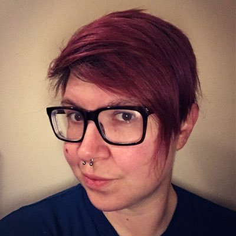

Volunteer with Mystery Code Society
We could not put on the quality programming that Mystery Code Society offers without our helpful volunteers.
Code of Conduct
and conduct themselves in a manner in accordance with our Classroom Guidelines .
Please review and familiarize yourself with these materials if you would like to volunteer with us.
Our board members are nominated by committee and elected annually...
Shannon Jackson
President
Eris Koleszar
Vice President
Wendy Holley
Secretary
Sandi Barr
Treasurer
I've long wanted to start a Girls Who Code Club in Omaha but knew I couldn't do it on my own, so when Shonna introduced me to Marvel and Lana, I felt we could build a great team with the Omaha Public Library, Interface School, and Omaha Coding Women. I had a feeling that some of the Omaha Coding Women members felt the same and figured that we'd get a few volunteers. When Omaha Coding Women got involved, they showed up in droves. I'm so proud of everyone's hard work and continuing efforts to bring this opportunity to more and more young women in Omaha, and I'm honored to be a part of it.
Not many of us had an opportunity to get this much exposure to technology in our younger years. Even more so, not many of us had peers to experience it with. One of the reasons I started Omaha Coding Women was because I knew very few female programmers, and I thought surely there must be more out there like me that are in need of a place to connect. The chance for these young ladies to learn and grow in a group of their peers is building such a strong foundation of support, encouragement, and teamwork. A strong team is 10x more valuable than a 10x engineer.
Our volunteers are a huge part of our programs' success. Thanks for all you do!
Alexandra Millatmal
Bianca Zongrone
Cara Heacock
Jen Jost
I was introduced to GWC through my course mentor at Interface Web School. The aspect that was initially appealing is the girls went through an interview process. As expected, the girls made an interesting group. Besides having the ability to learn programming, they were also musicians, artists, volunteers in their community, devoted family members, committed to their beliefs, and from diverse backgrounds.
From a social perspective, I believe that GWC is being a good steward to the community by giving young women the knowledge to navigate technology. Whether they decide to be programmers, managers, or whatever, having this knowledge will help them in any role they decided upon.

Kikki Beltz
Last summer I was looking into going back to school for a MS or a second BS, because I just wasn't having any luck finding a job with a Bachelor's degree in Physics. I was feeling kind of discouraged though, and I definitely wasn't excited by the thought of spending another 2-3 years in school. A friend of mine had graduated from Omaha Code School, which is a very intense 12 week coding "bootcamp," so I asked her about it. The more I looked into it, the more I thought it was something I might enjoy. To make a long story short, I applied, I worked hard, graduated in August of 2015, and it turns out that I absolutely love writing code.
I am very passionate about becoming a role model and encouraging young women in STEM fields. I showed talent in these fields early, but I was never encouraged to pursue them in school and I believe that was largely, though perhaps not intentionally, due to my gender. When I went to college at 18, I planned to be an art major, but my true love at that time was math. I believe that we need to support and nurture the talents and interests of young women in STEM to give them the the knowledge and the confidence to pursue fields that they might not have considered otherwise.
Melinda Deinert
Susan Tussing
 We ask that all of our volunteers adhere to our Code of Conduct
and conduct themselves in a manner in accordance with our Classroom Guidelines.
Please review and familiarize yourself with these materials if you would like to volunteer with us.
We ask that all of our volunteers adhere to our Code of Conduct
and conduct themselves in a manner in accordance with our Classroom Guidelines.
Please review and familiarize yourself with these materials if you would like to volunteer with us.